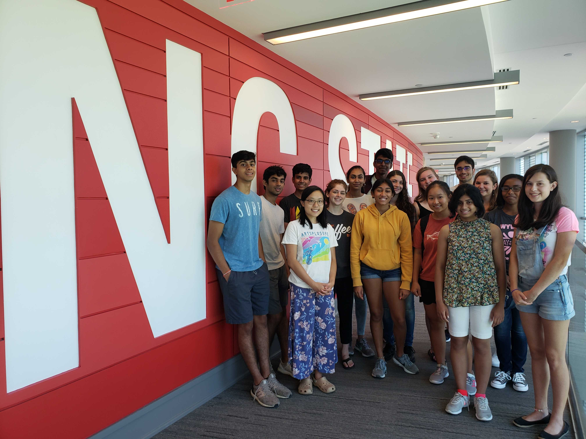
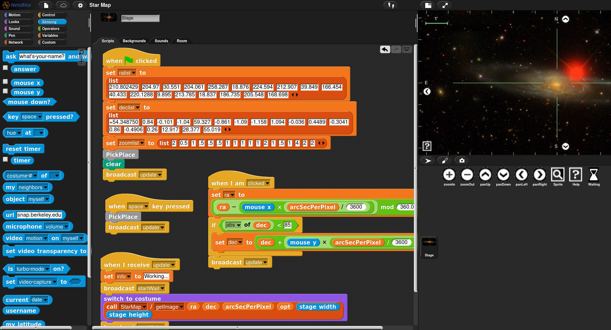
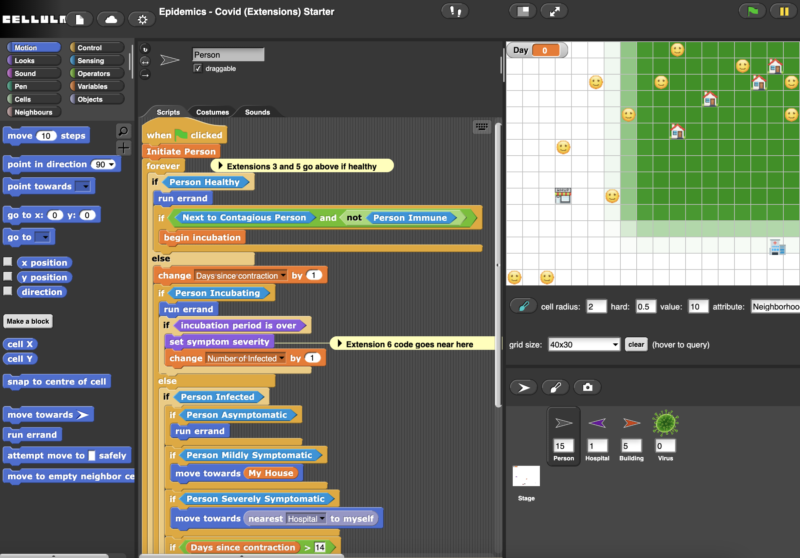
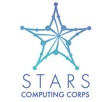
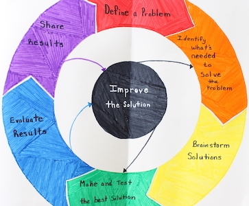

Projects
If you are interested in joining a project, please send me an email and CC the listed student contact as available.Project Areas
- Research
- Software development
- Outreach
Active Projects
CSC High School Internship Program
Starting in Summer 2019, this 6-week internship program is open to high school students interested in further developing their collaborative software engineering skills. This program partners high school students with prior block or text-based coding experience with K-12 teachers interested in integrating computing activities into their academic year classrooms. K-12 teachers in this partnership participate in NC State Summer Professional Development programs to learn more about computational thinking and computing research. Our high school interns work with the recent subject matter experts to develop short modules for a wide array of classroom areas including social studies, science, computing, etc. The internship follows an agile framework with daily scrum check-ins, weekly sprints and demos, as well as offers technical workshops and access to other events happening in NC State's cutting edge Computer Science Department. [Learn More][Apply Now]
Support for the project has been provided by the NC State STARS Computing Corps.
CS Frontiers
Building on the foundations set by the AP Computer Science (CS) Principles course, this project seeks to dramatically expand access, especially for high school girls, to the most exciting and emerging frontiers of computing, such as distributed computation, the internet of things (IoT), cybersecurity, and machine learning, as well as other 21st century skills required to productively leverage computational methods and tools in virtually every profession. Creating pathways that stimulate high school learners' interest in advanced topics with the goal of building a diverse, gender-balanced, future-ready workforce is a crucial and impactful imperative addressed in this work. [Website]
Support for the project has been provided by the National Science Foundation through grant DRL 1949492.
SnapClass
Working with North Carolina and South Carolina middle and high school teachers, we have developed a block-based programming hub using the Snap! and Cellular programming environments which deliver computing-infused assignments to non-computing classrooms. This project is actively working to combine classroom management support, block-based programming, and intelligent insights to increase K-12 students computational thinking abilities. [snaphub] [infusing computing]
Support for the project has been provided by the National Science Foundation through grant DRL 1837439 and DRL 1742351.
STARS
The STARS Computing Corps is a national alliance with a mission to broaden participation of underrepresented groups in computing within institutions of higher education and consists of several initiatives. The STARS student leadership corps at NC State leads numerous outreach programs to middle school and high school students in the greater Raleigh area. Larger programs like STARS Catalyst work at the national level to make systematic change to promote the retention, success, and promotion of underrepresented persons in the computing field. Contact Amy Isvik (aaisvik~AT~ncsu.edu) to be added to the STARS mailing list and join our ongoing efforts.
Support for the project has been provided by the National Science Foundation through grants CNS 1840686, CNS 2023400, and CNS 2137317.
Pivot Academy
Starting in 2016, Pivot Academy is a academic enrichment program and training opportunity for students and teachers in rural regions of Rwanda. Through the study abroad office we send NC State students on either an Alternative Spring Break experience (~10 days) or a Summer Study Abroad (~4 weeks). Our spring break students collaborate with primary schools in northern Rwanda focusing on English Literacy (through e-books) and STEM. Our summer abroad cohorts collaborate with secondary schools in souther Rwanda focusing on the engineering design cycle, hands-on STEM activities, and digital literacy and computing skills. NC State partners with Kepler University of Kigali, Rwanda to provide local undergraduate peers to assist in leading lessons with students. These cultural immersion programs offer credit for EED 509 - Field Experiences in Engineering Education, meeting NC State's Global Education requirements.